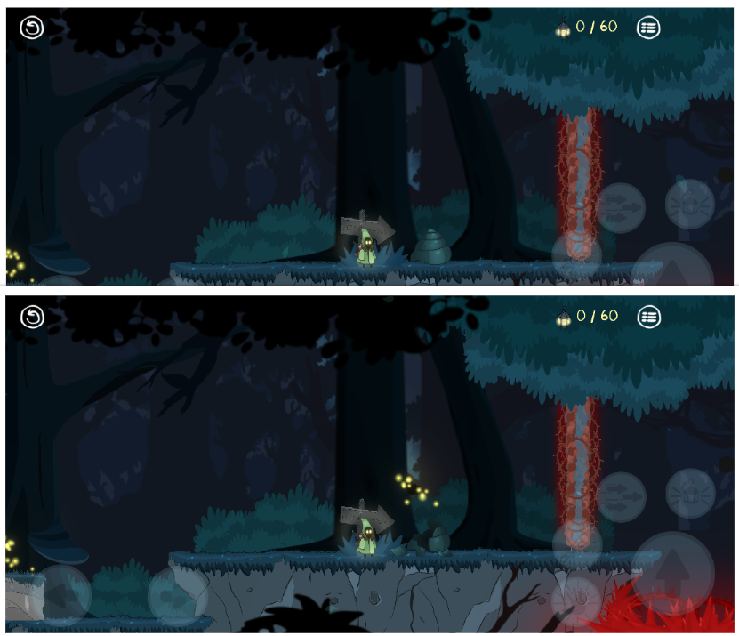
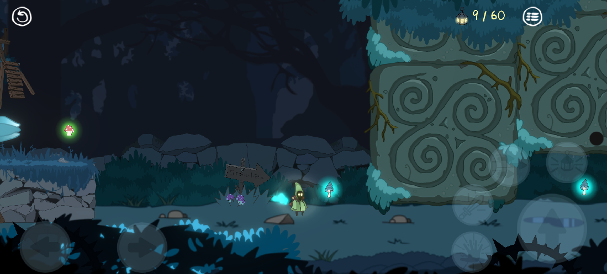
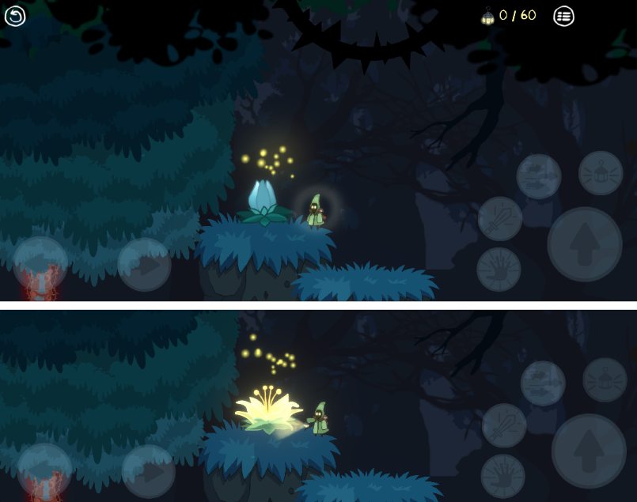

DevLog #2: A Beam of Light, Snail Shells, and a Runner Level!
Reminder: you're reading a DevLog - unfiltered updates from the magical forest.
New features? Oh, you bet!
-
Beam of Light - your magical lantern just got even more magical!
Special mushroom glades now amplify the glow of the fireflies,
and from your lamp bursts a mighty beam of light that bounces off crystal surfaces
and opens the way forward if it hits the right spot. -
Secrets in Shells - you can now smash old snail shells
to check if there's something curious hiding inside. -
Ancient Gnome Boulder Traps - beware, these stone guardians will squash you flat
like a pancake (a green one, to be precise). So keep moving, buddy! -
Mushrooms! Mushrooms! Mushrooms! - a new (actually well-forgotten old) mushroom
that makes you run waay faster! -
Effect Indicators - now you'll know exactly how long you can jump like a Gummi Bear
or dash like the Flash. Super handy, trust me. -
Lightflower - a slightly shy and delicate plant where fireflies love to hide.
But shine a bit of light on it, and it'll bloom in an instant! -
Bug Fixes - (of course) no details here, 'cause honestly,
we've already forgotten them.



So, what's next?
The release is getting pretty close, but there's still a whole forest of work left - literally and figuratively. Four more levels to go, and then the final push: the Hub, where you'll be able to share your light with other plants.
Right now we're working on a runner-style level, since we finally have the perfect combo of mushrooms - jump-boosting and speed-boosting - and I gotta say, the mix feels awesome. So we're preparing platforms that crumble under your feet and other cool stuff. It's gonna be a blast!